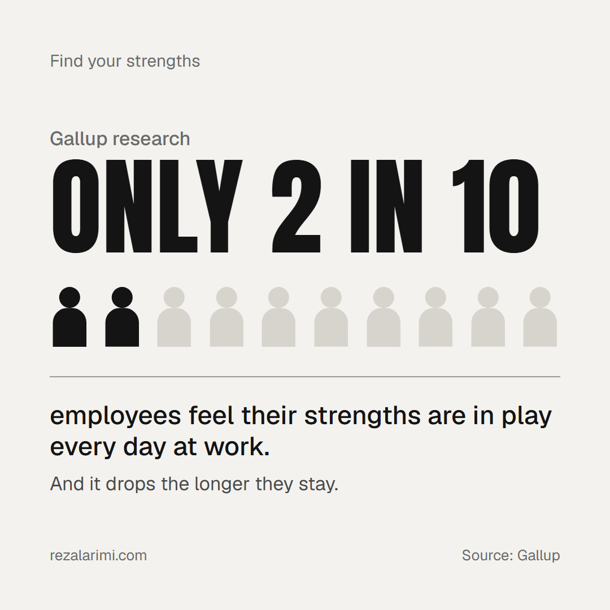
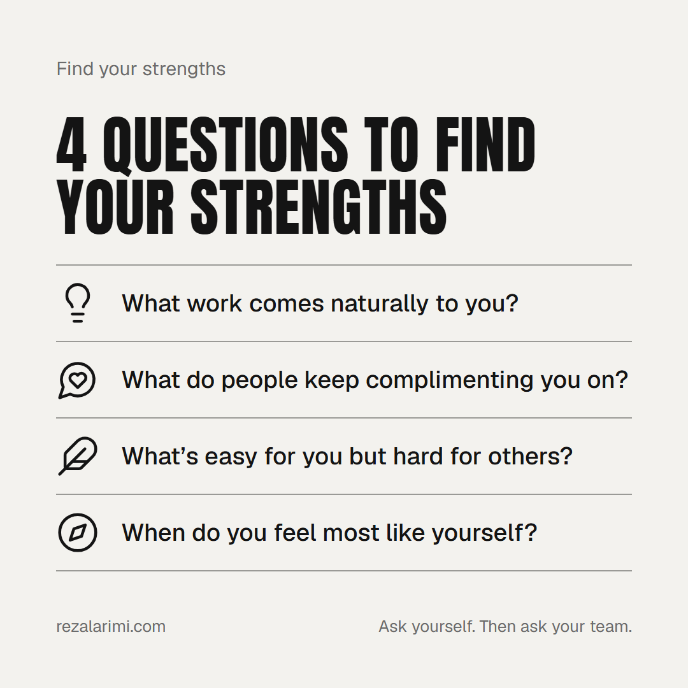

Weakness is damage control. Strength is the way up.
Gallup has interviewed more than 2 million people about what makes them great at work, and the finding is simple. Knowing your weaknesses helps you limit damage. Your strengths are what move you forward.
A strength isn’t just something you like doing. It’s a natural talent plus the time and effort you invest in it. Talent is the starting point. Investment is what turns it into a strength. (I wrote more about that model in How talent becomes a strength.)
The 20% problem
Only about 20% of employees feel their strengths are in play every day at work, and that share drops the longer they stay. People come in with energy and talent. Over time, the job slowly stops using what they’re best at.

That’s a management problem, and it’s one we can fix.
Four questions to start with
- What work comes naturally to you?The tasks you do well without much effort, and that give you energy instead of draining it.
- What do people keep complimenting you on?Other people often see your strengths before you do.
- What’s easy for you but hard for others?If you’re surprised that something is hard for someone else, you’ve probably found a talent.
- When do you feel most like yourself?The moments when you’re focused, full of energy and lose track of time.

Use them on yourself first
Write your answers down. Look for patterns. Those patterns are your strengths.
Then use them with your team
Ask these in your next one-on-one. Listen carefully. Then rearrange work so more of each person’s day uses what they’re naturally good at.
Why this matters
Being a good manager is part of personal development. You can’t bring out the best in others until you know what your own best looks like. These four questions are the easiest place to start, at work and in life.